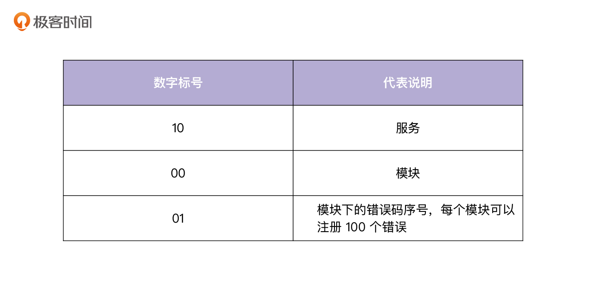
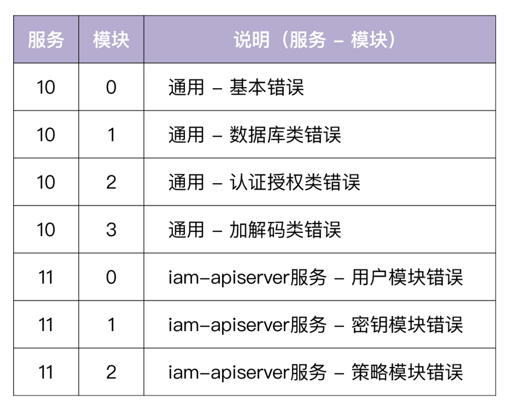
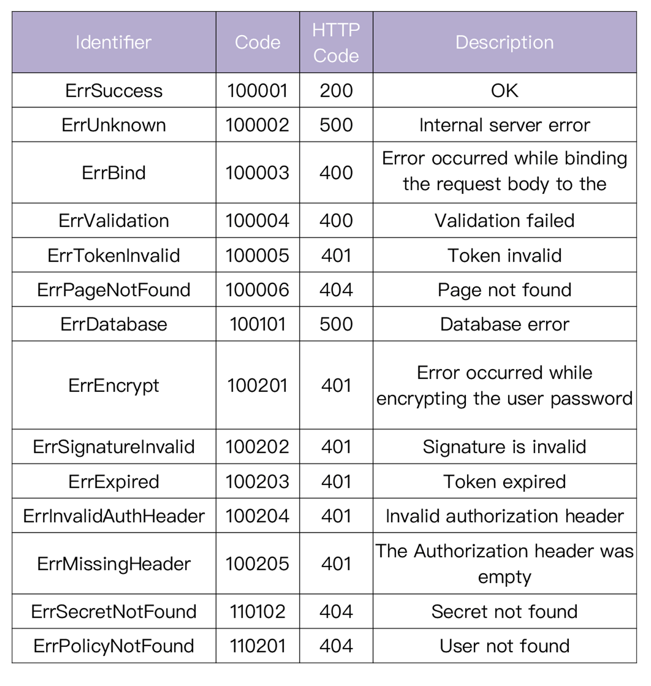

- 00 开篇词 从 0 开始搭建一个企业级 Go 应用.md.html
- 01 IAM系统概述：我们要实现什么样的 Go 项目？.md.html
- 02 环境准备：如何安装和配置一个基本的 Go 开发环境？.md.html
- 03 项目部署：如何快速部署 IAM 系统？.md.html
- 04 规范设计（上）：项目开发杂乱无章，如何规范？.md.html
- 05 规范设计（下）：commit 信息风格迥异、难以阅读，如何规范？.md.html
- 06 目录结构设计：如何组织一个可维护、可扩展的代码目录？.md.html
- 07 工作流设计：如何设计合理的多人开发模式？.md.html
- 08 研发流程设计（上）：如何设计 Go 项目的开发流程？.md.html
- 09 研发流程设计（下）：如何管理应用的生命周期？.md.html
- 10 设计方法：怎么写出优雅的 Go 项目？.md.html
- 11 设计模式：Go常用设计模式概述.md.html
- 12 API 风格（上）：如何设计RESTful API？.md.html
- 13 API 风格（下）：RPC API介绍.md.html
- 14 项目管理：如何编写高质量的Makefile？.md.html
- 15 研发流程实战：IAM项目是如何进行研发流程管理的？.md.html
- 16 代码检查：如何进行静态代码检查？.md.html
- 17 API 文档：如何生成 Swagger API 文档 ？.md.html
- 18 错误处理（上）：如何设计一套科学的错误码？.md.html
- 19 错误处理（下）：如何设计错误包？.md.html
- 20 日志处理（上）：如何设计日志包并记录日志？.md.html
- 21 日志处理（下）：手把手教你从 0 编写一个日志包.md.html
- 22 应用构建三剑客：Pflag、Viper、Cobra 核心功能介绍.md.html
- 23 应用构建实战：如何构建一个优秀的企业应用框架？.md.html
- 24 Web 服务：Web 服务核心功能有哪些，如何实现？.md.html
- 25 认证机制：应用程序如何进行访问认证？.md.html
- 26 IAM项目是如何设计和实现访问认证功能的？.md.html
- 27 权限模型：5大权限模型是如何进行资源授权的？.md.html
- 28 控制流（上）：通过iam-apiserver设计，看Web服务的构建.md.html
- 29 控制流（下）：iam-apiserver服务核心功能实现讲解.md.html
- 30 ORM：CURD 神器 GORM 包介绍及实战.md.html
- 31 数据流：通过iam-authz-server设计，看数据流服务的设计.md.html
- 32 数据处理：如何高效处理应用程序产生的数据？.md.html
- 33 SDK 设计（上）：如何设计出一个优秀的 Go SDK？.md.html
- 34 SDK 设计（下）：IAM项目Go SDK设计和实现.md.html
- 35 效率神器：如何设计和实现一个命令行客户端工具？.md.html
- 36 代码测试（上）：如何编写 Go 语言单元测试和性能测试用例？.md.html
- 37 代码测试（下）：Go 语言其他测试类型及 IAM 测试介绍.md.html
- 38 性能分析（上）：如何分析 Go 语言代码的性能？.md.html
- 39 性能分析（下）：API Server性能测试和调优实战.md.html
- 40 软件部署实战（上）：部署方案及负载均衡、高可用组件介绍.md.html
- 41 软件部署实战（中）：IAM 系统生产环境部署实战.md.html
- 42 软件部署实战（下）：IAM系统安全加固、水平扩缩容实战.md.html
- 43 技术演进（上）：虚拟化技术演进之路.md.html
- 44 技术演进（下）：软件架构和应用生命周期技术演进之路.md.html
- 45 基于Kubernetes的云原生架构设计.md.html
- 46 如何制作Docker镜像？.md.html
- 47 如何编写Kubernetes资源定义文件？.md.html
- 48 IAM 容器化部署实战.md.html
- 49 服务编排（上）：Helm服务编排基础知识.md.html
- 50 服务编排（下）：基于Helm的服务编排部署实战.md.html
- 51 基于 GitHub Actions 的 CI 实战.md.html
- 特别放送 Go Modules依赖包管理全讲.md.html
- 特别放送 Go Modules实战.md.html
- 特别放送 IAM排障指南.md.html
- 特别放送 分布式作业系统设计和实现.md.html
- 特别放送 给你一份Go项目中最常用的Makefile核心语法.md.html
- 特别放送 给你一份清晰、可直接套用的Go编码规范.md.html
- 直播加餐 如何从小白进阶成 Go 语言专家？.md.html
- 结束语 如何让自己的 Go 研发之路走得更远？.md.html
- 捐赠
18 错误处理（上）：如何设计一套科学的错误码？
你好，我是孔令飞。今天我们来聊聊如何设计业务的错误码。
现代的软件架构，很多都是对外暴露RESTful API接口，内部系统通信采用RPC协议。因为RESTful API接口有一些天生的优势，比如规范、调试友好、易懂，所以通常作为直接面向用户的通信规范。
既然是直接面向用户，那么首先就要求消息返回格式是规范的；其次，如果接口报错，还要能给用户提供一些有用的报错信息，通常需要包含Code码（用来唯一定位一次错误）和Message（用来展示出错的信息）。这就需要我们设计一套规范的、科学的错误码。
这一讲，我就来详细介绍下，如何设计一套规范的、科学的错误码。下一讲，我还会介绍如何提供一个errors包来支持我们设计的错误码。
期望错误码实现的功能
要想设计一套错误码，首先就得弄清我们的需求。
RESTful API是基于HTTP协议的一系列API开发规范，HTTP请求结束后，无论API请求成功或失败，都需要让客户端感知到，以便客户端决定下一步该如何处理。
为了让用户拥有最好的体验，需要有一个比较好的错误码实现方式。这里我介绍下在设计错误码时，期望能够实现的功能。
第一个功能是有业务Code码标识。
因为HTTP Code码有限，并且都是跟HTTP Transport层相关的Code码，所以我们希望能有自己的错误Code码。一方面，可以根据需要自行扩展，另一方面也能够精准地定位到具体是哪个错误。同时，因为Code码通常是对计算机友好的10进制整数，基于Code码，计算机也可以很方便地进行一些分支处理。当然了，业务码也要有一定规则，可以通过业务码迅速定位出是哪类错误。
第二个功能，考虑到安全，希望能够对外对内分别展示不同的错误信息。
当开发一个对外的系统，业务出错时，需要一些机制告诉用户出了什么错误，如果能够提供一些帮助文档会更好。但是，我们不可能把所有的错误都暴露给外部用户，这不仅没必要，也不安全。所以也需要能让我们获取到更详细的内部错误信息的机制，这些内部错误信息可能包含一些敏感的数据，不宜对外展示，但可以协助我们进行问题定位。
所以，我们需要设计的错误码应该是规范的，能方便客户端感知到HTTP是否请求成功，并带有业务码和出错信息。
常见的错误码设计方式
在业务中，大致有三种错误码实现方式。我用一次因为用户账号没有找到而请求失败的例子，分别给你解释一下：
第一种方式，不论请求成功或失败，始终返回200 http status code，在HTTP Body中包含用户账号没有找到的错误信息。
例如Facebook API的错误Code设计，始终返回200 http status code：
{
"error": {
"message": "Syntax error \"Field picture specified more than once. This is only possible before version 2.1\" at character 23: id,name,picture,picture",
"type": "OAuthException",
"code": 2500,
"fbtrace_id": "xxxxxxxxxxx"
}
}
采用固定返回200 http status code的方式，有其合理性。比如，HTTP Code通常代表HTTP Transport层的状态信息。当我们收到HTTP请求，并返回时，HTTP Transport层是成功的，所以从这个层面上来看，HTTP Status固定为200也是合理的。
但是这个方式的缺点也很明显：对于每一次请求，我们都要去解析HTTP Body，从中解析出错误码和错误信息。实际上，大部分情况下，我们对于成功的请求，要么直接转发，要么直接解析到某个结构体中；对于失败的请求，我们也希望能够更直接地感知到请求失败。这种方式对性能会有一定的影响，对客户端不友好。所以我不建议你使用这种方式。
第二种方式，返回http 404 Not Found错误码，并在Body中返回简单的错误信息。
例如：Twitter API的错误设计，会根据错误类型，返回合适的HTTP Code，并在Body中返回错误信息和自定义业务Code。
HTTP/1.1 400 Bad Request
x-connection-hash: xxxxxxxxxxxxxxxxxxxxxxxxxxxxxxxxxxxxxxxxxxxxxxxxxxxxxx
set-cookie: guest_id=xxxxxxxxxxxxxxxxxxxxxxxxxxxxxxxxxxxxxxxxxxxxxxxxxxxxxx
Date: Thu, 01 Jun 2017 03:04:23 GMT
Content-Length: 62
x-response-time: 5
strict-transport-security: max-age=631138519
Connection: keep-alive
Content-Type: application/json; charset=utf-8
Server: tsa_b
{"errors":[{"code":215,"message":"Bad Authentication data."}]}
这种方式比第一种要好一些，通过http status code可以使客户端非常直接地感知到请求失败，并且提供给客户端一些错误信息供参考。但是仅仅靠这些信息，还不能准确地定位和解决问题。
第三种方式，返回http 404 Not Found错误码，并在Body中返回详细的错误信息。
例如：微软Bing API的错误设计，会根据错误类型，返回合适的HTTP Code，并在Body中返回详尽的错误信息。
HTTP/1.1 400
Date: Thu, 01 Jun 2017 03:40:55 GMT
Content-Length: 276
Connection: keep-alive
Content-Type: application/json; charset=utf-8
Server: Microsoft-IIS/10.0
X-Content-Type-Options: nosniff
{"SearchResponse":{"Version":"2.2","Query":{"SearchTerms":"api error codes"},"Errors":[{"Code":1001,"Message":"Required parameter is missing.","Parameter":"SearchRequest.AppId","HelpUrl":"http\u003a\u002f\u002fmsdn.microsoft.com\u002fen-us\u002flibrary\u002fdd251042.aspx"}]}}
这是我比较推荐的一种方式，既能通过http status code使客户端方便地知道请求出错，又可以使用户根据返回的信息知道哪里出错，以及如何解决问题。同时，返回了机器友好的业务Code码，可以在有需要时让程序进一步判断处理。
错误码设计建议
综合刚才讲到的，我们可以总结出一套优秀的错误码设计思路：
- 有区别于
http status code的业务码，业务码需要有一定规则，可以通过业务码判断出是哪类错误。 - 请求出错时，可以通过
http status code直接感知到请求出错。 - 需要在请求出错时，返回详细的信息，通常包括3类信息：业务Code码、错误信息和参考文档（可选）。
- 返回的错误信息，需要是可以直接展示给用户的安全信息，也就是说不能包含敏感信息；同时也要有内部更详细的错误信息，方便debug。
- 返回的数据格式应该是固定的、规范的。
- 错误信息要保持简洁，并且提供有用的信息。
这里其实还有两个功能点需要我们实现：业务Code码设计，以及请求出错时，如何设置http status code。
接下来，我会详细介绍下如何实现这两个功能点。
业务Code码设计
要解决业务Code码如何设计这个问题，我们先来看下为什么要引入业务Code码。
在实际开发中，引入业务Code码有下面几个好处：
- 可以非常方便地定位问题和定位代码行（看到错误码知道什么意思、grep错误码可以定位到错误码所在行、某个错误类型的唯一标识）。
- 错误码包含一定的信息，通过错误码可以判断出错误级别、错误模块和具体错误信息。
- Go中的HTTP服务器开发都是引用net/http包，该包中只有60个错误码，基本都是跟HTTP请求相关的错误码，在一个大型系统中，这些错误码完全不够用，而且这些错误码跟业务没有任何关联，满足不了业务的需求。引入业务的Code码，则可以解决这些问题。
- 业务开发过程中，可能需要判断错误是哪种类型，以便做相应的逻辑处理，通过定制的错误可以很容易做到这点，例如：
if err == code.ErrBind {
...
}
这里要注意，业务Code码可以是一个整数，也可以是一个整型字符串，还可以是一个字符型字符串，它是错误的唯一标识。
通过研究腾讯云、阿里云、新浪的开放API，我发现新浪的API Code码设计更合理些。所以，我参考新浪的Code码设计，总结出了我推荐的Code码设计规范：纯数字表示，不同部位代表不同的服务，不同的模块。
错误代码说明：100101
- 10: 服务。
- 01: 某个服务下的某个模块。
- 01: 模块下的错误码序号，每个模块可以注册100个错误。
通过100101可以知道这个错误是服务 A，数据库模块下的记录没有找到错误。
你可能会问：按这种设计，每个模块下最多能注册100个错误，是不是有点少？其实在我看来，如果每个模块的错误码超过100个，要么说明这个模块太大了，建议拆分；要么说明错误码设计得不合理，共享性差，需要重新设计。
如何设置HTTP Status Code
Go net/http包提供了60个错误码，大致分为如下5类：
- 1XX - （指示信息）表示请求已接收，继续处理。
- 2XX - （请求成功）表示成功处理了请求的状态代码。
- 3XX - （请求被重定向）表示要完成请求，需要进一步操作。通常，这些状态代码用来重定向。
- 4XX - （请求错误）这些状态代码表示请求可能出错，妨碍了服务器的处理，通常是客户端出错，需要客户端做进一步的处理。
- 5XX - （服务器错误）这些状态代码表示服务器在尝试处理请求时发生内部错误。这些错误可能是服务器本身的错误，而不是客户端的问题。
可以看到HTTP Code有很多种，如果每个Code都做错误映射，会面临很多问题。比如，研发同学不太好判断错误属于哪种http status code，到最后很可能会导致错误或者http status code不匹配，变成一种形式。而且，客户端也难以应对这么多的HTTP错误码。
所以，这里建议http status code不要太多，基本上只需要这3个HTTP Code:
- 200 - 表示请求成功执行。
- 400 - 表示客户端出问题。
- 500 - 表示服务端出问题。
如果觉得这3个错误码不够用，最多可以加如下3个错误码：
- 401 - 表示认证失败。
- 403 - 表示授权失败。
- 404 - 表示资源找不到，这里的资源可以是URL或者RESTful资源。
将错误码控制在适当的数目内，客户端比较容易处理和判断，开发也比较容易进行错误码映射。
IAM项目错误码设计规范
接下来，我们来看下IAM项目的错误码是如何设计的。
Code 设计规范
先来看下IAM项目业务的Code码设计规范，具体实现可参考internal/pkg/code目录。IAM项目的错误码设计规范符合上面介绍的错误码设计思路和规范，具体规范见下。
Code 代码从 100001 开始，1000 以下为 github.com/marmotedu/errors 保留 code。
错误代码说明：100001

服务和模块说明
- 通用：说明所有服务都适用的错误，提高复用性，避免重复造轮子。
错误信息规范说明
- 对外暴露的错误，统一大写开头，结尾不要加
.。 - 对外暴露的错误要简洁，并能准确说明问题。
- 对外暴露的错误说明，应该是
该怎么做而不是哪里错了。
这里你需要注意，错误信息是直接暴露给用户的，不能包含敏感信息。
IAM API接口返回值说明
如果返回结果中存在 code 字段，则表示调用 API 接口失败。例如：
{
"code": 100101,
"message": "Database error",
"reference": "https://github.com/marmotedu/iam/tree/master/docs/guide/zh-CN/faq/iam-apiserver"
}
上述返回中 code 表示错误码，message 表示该错误的具体信息。每个错误同时也对应一个 HTTP 状态码。比如上述错误码对应了 HTTP 状态码 500(Internal Server Error)。另外，在出错时，也返回了reference字段，该字段包含了可以解决这个错误的文档链接地址。
关于IAM 系统支持的错误码，我给你列了一个表格，你可以看看：

总结
对外暴露的API接口需要有一套规范的、科学的错误码。目前业界的错误码大概有3种设计方式，我用一次因为用户账号没有找到而请求失败的例子，给你做了解释：
- 不论请求成功失败，始终返回
200 http status code，在HTTP Body中包含用户账号没有找到的错误信息。 - 返回
http 404 Not Found错误码，并在Body中返回简单的错误信息。 - 返回
http 404 Not Found错误码，并在Body中返回详细的错误信息。
这一讲，我参考这3个错误码设计，给出了自己的错误码设计建议：错误码包含HTTP Code和业务Code，并且业务Code会映射为一个HTTP Code。错误码也会对外暴露两种错误信息，一种是直接暴露给用户的，不包含敏感信息的信息；另一种是供内部开发查看，定位问题的错误信息。该错误码还支持返回参考文档，用于在出错时展示给用户，供用户查看解决问题。
建议你重点关注我总结的Code码设计规范：纯数字表示，不同部位代表不同的服务，不同的模块。
比如错误代码100101，其中10代表服务；中间的01代表某个服务下的某个模块；最后的01代表模块下的错误码序号，每个模块可以注册100个错误。
课后练习
- 既然错误码是符合规范的，请思考下：有没有一种Low Code的方式，根据错误码规范，自动生成错误码文档呢？
- 思考下你还遇到过哪些更科学的错误码设计。如果有，也欢迎在留言区分享交流。
欢迎你在留言区与我交流讨论，我们下一讲见。
© 2019 - 2023 Liangliang Lee. Powered by gin and hexo-theme-book.